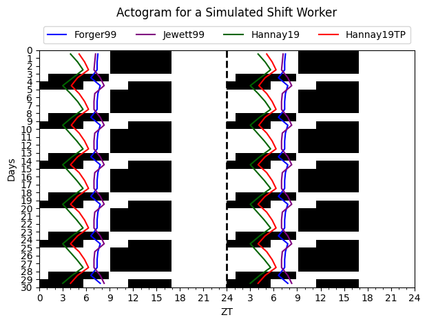

import numpy as np
import matplotlib.pyplot as plt
import matplotlib.lines as lines
from circadian.plots import Actogram
from circadian.lights import LightSchedule
from circadian.models import Forger99, Jewett99, Hannay19, Hannay19TP
days_night = 3
days_day = 2
slam_shift = LightSchedule.ShiftWork(lux=300.0, days_on=days_night, days_off=days_day)
total_days = 30
time = np.arange(0, 24*total_days, 0.10)
light_values = slam_shift(time)
f_model = Forger99()
kj_model = Jewett99()
spm_model = Hannay19()
tpm_model = Hannay19TP()
equilibration_reps = 2
initial_conditions_forger = f_model.equilibrate(time, light_values, equilibration_reps)
initial_conditions_kj = kj_model.equilibrate(time, light_values, equilibration_reps)
initial_conditions_spm = spm_model.equilibrate(time, light_values, equilibration_reps)
initial_conditions_tpm = tpm_model.equilibrate(time, light_values, equilibration_reps)Circadian


Welcome to circadian, a computational package for the simulation and analysis of circadian rhythms
Install
circadian can be installed via pip:
pip install circadianOverview
The circadian package implements key mathematical models in the field such as:
Forger99- Forger et al. (1999)Hannay19andHannay19TP- Hannay et al. (2019)Jewett99- Kronauer et al. (1999)
See all the available models at circadian/models.py
Additionally, circadian provides a set of tools for simulating and analzying circadian rhythms:
- Define light schedules using the
Lightclass and feed directly into the models - Calculate phase response curves using the
PRCFinderclass - Generate actograms and phase plots with the
circadian.plotsmodule
Finally, the package streamlines the process of reading, processing, and analyzing wereable data via the circadian.readers module.
Check out the documentation for a full overview of the package and its features.
Example
The code below shows how to simulate the circadian rhythm of a shift worker for four different models and visualize the results in an actogram plot
The models are integrated using an explicit Runge-Kutta 4 (RK4) scheme
trajectory_f = f_model(time, initial_conditions_forger, light_values)
trajectory_kj = kj_model(time, initial_conditions_kj, light_values)
trajectory_spm = spm_model(time, initial_conditions_spm, light_values)
trajectory_tpm = tpm_model(time, initial_conditions_tpm, light_values)The Dim Light Melatonin Onset (DLMO), an experimental measurement of circadian phase, is calculated for each model by
dlmo_f = f_model.dlmos()
dlmo_kj = kj_model.dlmos()
dlmo_spm = spm_model.dlmos()
dlmo_tpm = tpm_model.dlmos()Lastly, the results of the simulation–DLMOs included– are visualized in an Actogram plot from the circadian.plots module
acto = Actogram(time, light_vals=light_values, opacity=1.0, smooth=False)
acto.plot_phasemarker(dlmo_f, color='blue')
acto.plot_phasemarker(dlmo_spm, color='darkgreen')
acto.plot_phasemarker(dlmo_tpm, color='red')
acto.plot_phasemarker(dlmo_kj, color='purple')
# legend
blue_line = lines.Line2D([], [], color='blue', label='Forger99')
green_line = lines.Line2D([], [], color='darkgreen', label='Hannay19')
red_line = lines.Line2D([], [], color='red', label='Hannay19TP')
purple_line = lines.Line2D([], [], color='purple', label='Jewett99')
plt.legend(handles=[blue_line, purple_line, green_line, red_line],
loc='upper center', bbox_to_anchor=(0.5, 1.12), ncol=4)
plt.title("Actogram for a Simulated Shift Worker", pad=35)
plt.tight_layout()
plt.show()
Contributing
We welcome contributions to circadian via issues, pull requests, or comments! Please see our contributing guidelines for more information.
Citation
If you find circadian useful, please cite as:
@software{franco_tavella_2023_8206871,
author = {Franco Tavella and
Kevin Hannay and
Olivia Walch},
title = {{Arcascope/circadian: Refactoring of readers and
metrics modules}},
month = aug,
year = 2023,
publisher = {Zenodo},
version = {v1.0.2},
doi = {10.5281/zenodo.8206871},
url = {https://doi.org/10.5281/zenodo.8206871}
}Head to https://doi.org/10.5281/zenodo.8206871 for more information on the latest release.